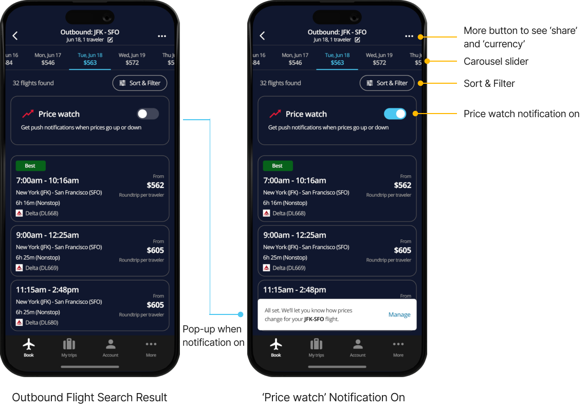

Delta Airlines
Project type:
Personal project
Scope:
Desk research
User flow
Wireframe
High-fi mockup
My role:
UX/UI Designer
Duration:
8 days
11 June - 18 June, 2024
WHAT IS THE CONTEXT?
USER FEEDBACK
THE PROBLEM
1. The way information is presented is confusing
2. Some steps during flight booking is confusing
OPPORTUNITY
1. How might we organize information and present it in a clear format in the best way?
2. How might we improve the flight booking process to make it easier for users to complete their booking?
USER FLOW
DESIGN APPROACH
WIREFRAME SKETCH
To improve the inconveniences of the current Fly Delta app, I analyzed competitors' apps and redesigned Fly Delta wireframes.
UI STYLE GUIDE
HIGH-FI MOCKUP
1. SPLASH SCREEN & FLIGHT SEARCH
I changed the structure a bit so that when a user opens the app, the 'Book' tab opens as the home where they can go directly to the flight search. I made the design simple with the only information users need, and added features such as 'Recent searches' to help with convenient searches.
2. FLIGHT SEARCH RESULT
For people whose travel dates are flexible, I designed it to show prices for the next few days and from a few days ago in a carousel slider so that people can select the relevant date and see the flight right away. A ‘price watch’ notification function is added so that people can receive notifications about changes in ticket prices. I also focused on organizing and displaying information that could be scanned as quickly as possible.
3. FLIGHT DETAILS
A step to select the flight experience (seat class) is added when one of the flights shown in the flight result page is tapped. When one of the seat class is tapped, the corresponding details appear so users don’t have to go back and forth the pages to check details.
4. REVIEW YOUR TRIP & LOG IN / SIGN UP
I used outbound and inbound flight icons, various font sizes and colors so that a lot of information can be scanned quickly. On the login and sign up page, point color is used to highlight parts that needs user’s attention.
5. FLIGHT SEARCH RESULT
Passenger and payment information are arranged on one page so that users can fill out the information one by one from the top. If personal information has already been registered by logging in or signing up in the previous step, the information can be retrieved automatically so users don’t have to write again. Information that must be entered is marked with *. CTA button only lights up when users fill out all the required information. I designed the booking confirmation page as concisely as possible showing only the necessary information.
Clickable Prototype
WHAT I LEARNED
1. When conveying a lot of information through text, it is
important to ensure that readability is good. I had to choose
colors carefully, especially when using dark navy as the screen
background color. In addition to similar colors, complementary
colors had to be used well. I also learned that it is important to
use font color, font size, and font weight well to convey
information effectively.
2. Through this project, I carefully thought how to present
information clearly and to design user flow well. I learned that
providing the right information at the right step and place
prevents users from being confused.
NEXT STEPS
In addition to flight booking, there were inconveniences in the sign-up process and the process of confirming my trips. The drop-rate is expected to be high during the sign-up process. After filling out all the information when registering as a member, I clicked “Done” and was told that I was already a registered member. It was unnecessary to go through the trouble of filling out the information until then. Also, when entering the username and password, the requirements are not displayed right below, so it is inconvenient to re-enter them to meet the conditions or check the requirements by pressing the i button on the right. Also, even though all the information has not been filled in, the ‘Continue’ button is highlighted in red from the beginning, so I am confused as to whether all the information must be entered.